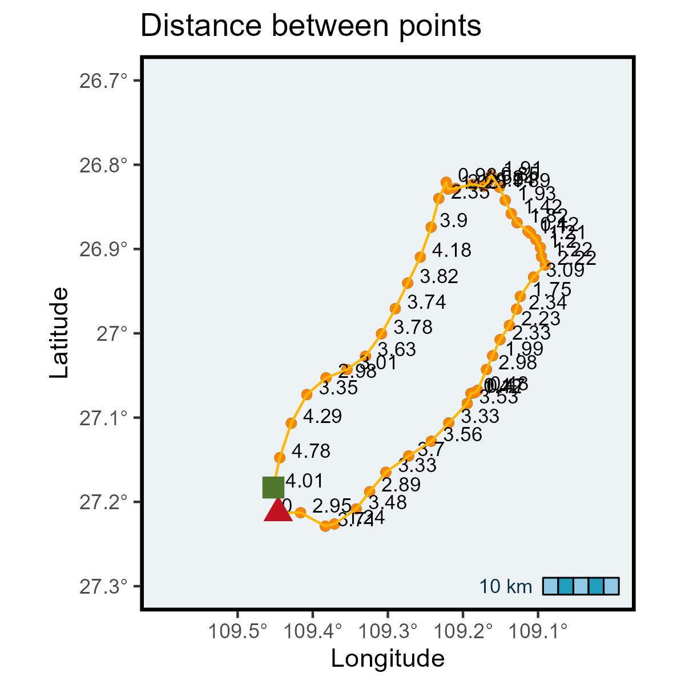

#devtools::install_github("MiriamLL/sula")
library(sula)Distance between consecutive points
r
ggplot2
sula
Y2024
biologging
This posts allows to calculate distance between consecutive locations.
Intro
Calculate distance between points between consecutive locations.
One of the uses in animal movements it to calculate how much distance an animal covers on one trip.
Data
For the exercises, test data is from Masked boobies.
This data frame contains data from one individual.
It has the column Longitude, Latitude and trip_number.
GPS_edited<-sula::GPS_editedLoad the package tidyverse
library(tidyverse)Select one of the trips from this individual.
GPS_trip <- GPS_edited %>% filter(trip_number=='trip_4')Using the function geom_path you can plot the trajectory.
library(ggspatial)Add the annotation layer to see the scale.
ggplot(GPS_trip, aes(x=Longitude, y=Latitude)) +
geom_path()+
scale_x_continuous(limits=c(-109.6,-109.0),breaks=c(-109.5,-109.4,-109.3,-109.2,-109.1),labels = function(x) paste0(-x, '\u00B0')) +
scale_y_continuous(limits=c(-27.3,-26.7),labels = function(x) paste0(-x, '\u00B0')) +
ggtitle('Tracking data')+xlab('Longitude')+ylab('Latitude')+
theme_bw()+
theme(
legend.position='none',
panel.background = element_rect(fill = '#edf2f4'),
panel.grid.major = element_blank(),
panel.grid.minor = element_blank(),
panel.border = element_rect(colour = "black", fill=NA, size=1.5))+
annotation_scale(location = "br",bar_cols = c("#ef233c", "#d90429"),text_col = '#ef233c')Convert to spatial
Convert to spatial object to assign a reference system.
GPS_spatial <- GPS_trip[, c("Longitude", "Latitude")]
GPS_spatial <- sp::SpatialPointsDataFrame(coords = GPS_spatial,data = GPS_trip)
sp::proj4string(GPS_spatial) = sp::CRS("+init=epsg:4326")This function calculates distance between consecutive points.
GPS_dist <- sapply(2:nrow(GPS_spatial), function(i) {geosphere::distm(GPS_spatial[i - 1, ], GPS_spatial[i,])})To add it back to the data frame consider that the first point is missing. To solve this add a zero or an NA.
GPS_dist<- c(0, GPS_dist)It would show in meters, divide by 1000 to show as kilometers, the function round helps to transform to only two decimals.
GPS_trip$distances <- round(GPS_dist/1000, 2)Plot
To plot as an spatial object (and get the scale correct) use functions from the package sf.
library(sf)GPS_sf <- st_as_sf(GPS_spatial)Here the scale is showed correctly.
ggplot(GPS_sf)+
geom_sf()+
geom_point(data=GPS_trip, aes(x=Longitude,y=Latitude))+
geom_text(data=GPS_trip, aes(x=Longitude,y=Latitude,label=distances),hjust=-0.3, vjust=0, size=3)+
geom_path(data=GPS_trip, aes(x=Longitude,y=Latitude))+
annotation_scale(location = "br",bar_cols = c("#ef233c", "#d90429"),text_col = '#ef233c')+
scale_x_continuous(limits=c(-109.6,-109.0),breaks=c(-109.5,-109.4,-109.3,-109.2,-109.1),labels = function(x) paste0(-x, '\u00B0')) +
scale_y_continuous(limits=c(-27.3,-26.7),labels = function(x) paste0(-x, '\u00B0')) +
ggtitle('Tracking data')+xlab('Longitude')+ylab('Latitude')+
theme_bw()+
theme(
legend.position='none',
panel.background = element_rect(fill = '#edf2f4'),
panel.grid.major = element_blank(),
panel.grid.minor = element_blank(),
panel.border = element_rect(colour = "black", fill=NA, size=1.5))The trajectory would be easier to interpreter if we include more elements on the plot.
To include the begging or the end of the trajectory identify the first and last location.
GPS_first<-data.frame(Latitude=first(GPS_trip$Latitude),Longitude=first(GPS_trip$Longitude))
GPS_last<-data.frame(Latitude=last(GPS_trip$Latitude),Longitude=last(GPS_trip$Longitude))Here, the first location is shown as the red triangle.
The last location is is shown as the green square.
Plot_distance<-ggplot(GPS_sf)+
geom_sf()+
geom_point(data=GPS_trip, aes(x=Longitude,y=Latitude),color='#fb8500')+
geom_text(data=GPS_trip, aes(x=Longitude,y=Latitude,label=distances),hjust=-0.3, vjust=0, size=3)+
geom_path(data=GPS_trip, aes(x=Longitude,y=Latitude),color='#ffb703')+
annotation_scale(location = "br",bar_cols = c("#8ecae6", "#219ebc"),text_col = '#023047')+
scale_x_continuous(limits=c(-109.6,-109.0),breaks=c(-109.5,-109.4,-109.3,-109.2,-109.1),labels = function(x) paste0(-x, '\u00B0')) +
scale_y_continuous(limits=c(-27.3,-26.7),labels = function(x) paste0(-x, '\u00B0')) +
ggtitle('Distance between points')+xlab('Longitude')+ylab('Latitude')+
theme_bw()+
theme(
legend.position='none',
panel.background = element_rect(fill = '#edf2f4'),
panel.grid.major = element_blank(),
panel.grid.minor = element_blank(),
panel.border = element_rect(colour = "black", fill=NA, size=1.5))+
geom_point(data=GPS_first, aes(x=Longitude,y=Latitude),color='#c1121f',fill='#c1121f', shape=17, size=4)+
geom_point(data=GPS_last, aes(x=Longitude,y=Latitude),color='#4f772d',fill='#4f772d',shape=15,size=4)
Plot_distance
Further reading
The function dist_points from the package sula runs this function in loop.
This helps when there are more than one trip and several individuals.